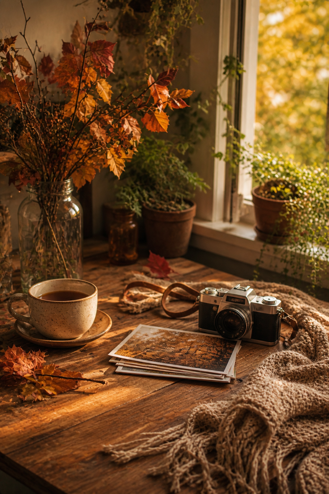
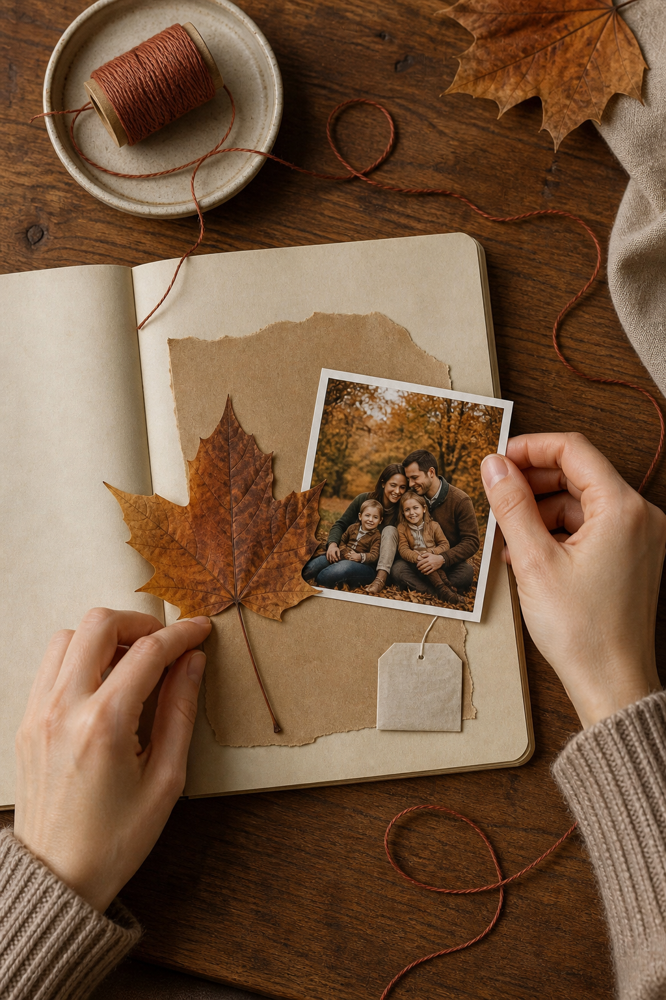

Autumn memories are often made from ordinary things: the drink on the table, the walk taken after lunch, a leaf carried home, and the particular light at the window. A journal page can preserve that atmosphere without needing a major event or a large collection of supplies.

Choose one photograph as the anchor
Select a photograph that holds the mood rather than the most perfect composition. A path, a table, a coat on a chair, or the people you were with can all work. Print a copy if the original matters. Place it slightly off center so there is room for the quieter evidence around it.
Save one real fragment
A dry leaf is beautiful, but it can become brittle and stain the page. Press it first, seal it in a glassine pocket, or trace its shape onto thin paper. A tea label, café receipt, fruit sticker, or narrow strip of packaging may survive handling more easily while still locating the memory in everyday life.
Let kraft paper connect the pieces
Tear a piece of kraft or brown wrapping paper larger than the photograph. Its warm neutral color acts as a bridge between bright leaves, white photo borders, and cream journal paper. Keep the torn edge visible; that small irregularity gives the composition movement.

Write what the photograph cannot show
Record one sensory detail and one human detail. Note the smell of wet pavement or warm tea, then add something said, noticed, or almost forgotten. These sentences give the page a reason to exist beyond the image. Write them on the base page, a small tag, or the back of the photograph.
Use rust thread as a final line
Wrap a short length of rust, ochre, or brown thread around the tag, stitch it through one paper layer, or let it form a loose curve near the photograph. Thread adds color without introducing another printed pattern. Secure every end so it cannot catch on the facing page.
Leave part of the page open
Do not fill every corner. Empty cream paper can represent pale sky, quiet time, or the pause around the memory. If the composition feels unfinished, add a date before adding another decoration. Often the date is the small factual detail that makes the page settle.
Finish with a simple test
Look at the spread from a few feet away. The photograph should be first, the natural fragment second, and the writing available when you move closer. If every element calls equally loudly, remove one patterned scrap or soften it beneath translucent paper.
An autumn memory page works best when it remains specific. Preserve this afternoon, this leaf, this cup, and this sentence; the season will appear naturally through the details.
Image note: Some visuals in this article were created with AI and curated by Sentimentalica.